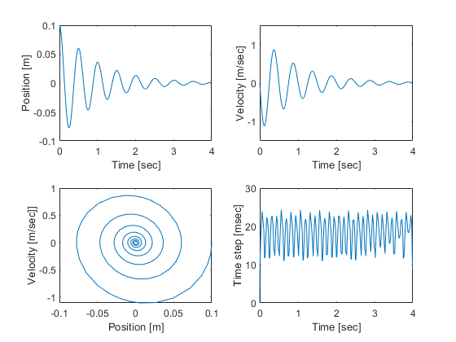
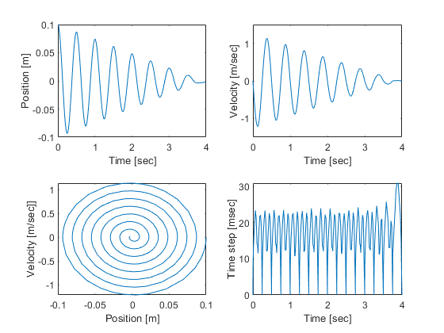
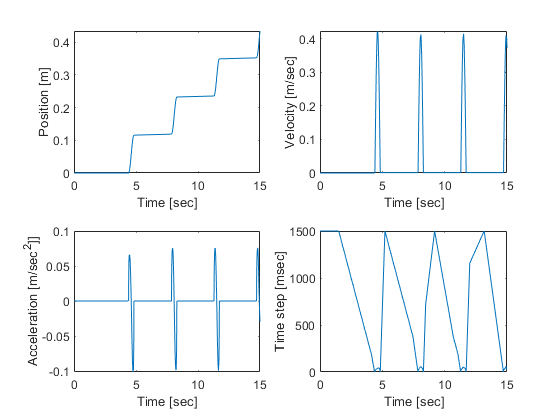

Contents
Problems 1-2
ode_smd_main.m - main program for example use of ODE solver spring-mass-damper HJSIII, 20.04.09
ODE coded in file ode_smd_yd.m - m*xdd = Fext + Fspr + Fdamp
{y} = { x } {yd} = { xd } { xd } { xdd }
clear global m k c % physical constants % x [m] % xd [m/sec] % xdd [m/sec^2] m = 1; % mass [kg] k = 157.9; % spring [N/m] - causes wn = 2Hz c = 2; % viscous [N.sec/m] - causes 4 sec exp decay % calculate damping coeficient from coefficients wn = sqrt(k/m); damp_coeff = (c/(2*wn*m)); fprintf('The damping coefficient calculated from the m,k,c coefficents is %.4f\n',damp_coeff) % calculate damping coeficient from decrement n = 2; x0 = .0597578; xn = .0217619; decrement = (1/n)*log(x0/xn); damp_dec = decrement/sqrt(4*pi^2 + decrement^2); fprintf('The damping coefficient calculated from the log decrement is %.4f\n',damp_dec) % initial conditions y0 = [ 0.1 0 ]'; % free release % time range tspan = [ 0 4 ]; % measure CPU time tic; [ t, y ] = ode23( 'ode_smd_yd', tspan, y0 ); t_exe = toc % time step h = 1000 * diff(t); % units [msec] h = [ h ; h(end) ]; % repeat last value to make the same length as t n_time_steps = length( t ) ave_time_step = mean( h ) % time domain results figure( 1 ) subplot( 2, 2, 1 ) plot( t, y(:,1) ) xlabel( 'Time [sec]' ) ylabel( 'Position [m]' ) axis( [ 0 4 -0.1 0.1 ] ) subplot( 2, 2, 2 ) plot( t, y(:,2) ) xlabel( 'Time [sec]' ) ylabel( 'Velocity [m/sec]' ) axis( [ 0 4 -1.5 1.5 ] ) subplot( 2, 2, 3 ) plot( y(:,1), y(:,2) ) xlabel( 'Position [m]' ) ylabel( 'Velocity [m/sec]]' ) subplot( 2, 2, 4 ) plot( t, h ) xlabel( 'Time [sec]' ) ylabel( 'Time step [msec]' ) % bottom - ode_smd_main
The damping coefficient calculated from the m,k,c coefficents is 0.0796
The damping coefficient calculated from the log decrement is 0.0801
t_exe =
0.0576
n_time_steps =
235
ave_time_step =
17.0592
 Problem 3
clc,clear all global m k c f % physical constants % x [m] % xd [m/sec] % xdd [m/sec^2] m = 1; % mass [kg] k = 157.9; % spring [N/m] - causes wn = 2Hz c = 0; % viscous [N.sec/m] - causes 4 sec exp decay f = .5; %N % calculate damping coeficient from coefficients % wn = sqrt(k/m); % damp_coeff = (c/(2*wn*m)); % fprintf('The damping coefficient calculated from the m,k,c coefficents is %.4f\n',damp_coeff) % % calculate damping coeficient from decrement % n = 2; % x0 = .0597578; % xn = .0217619; % decrement = (1/n)*log(x0/xn); % damp_dec = decrement/sqrt(4*pi^2 + decrement^2); % fprintf('The damping coefficient calculated from the log decrement is %.4f\n',damp_dec) % initial conditions y0 = [ 0.1 0 ]'; % free release % time range tspan = [ 0 4 ]; % measure CPU time tic; [ t, y ] = ode23( 'ode_smd_yd2', tspan, y0 ); t_exe = toc % time step h = 1000 * diff(t); % units [msec] h = [ h ; h(end) ]; % repeat last value to make the same length as t n_time_steps = length( t ) ave_time_step = mean( h ) % time domain results % calculate Coulomb friction force from decay envelope n = 3; x0 = .0868991; xn = .0482818; f_computed = (k*(x0 - xn))/(4*n); fprintf('The Coulomb friction force computed from the decay envelope of the simulation data is %.3f [N]\n',f_computed) figure( 2 ) subplot( 2, 2, 1 ) plot( t, y(:,1) ) xlabel( 'Time [sec]' ) ylabel( 'Position [m]' ) axis( [ 0 4 -0.1 0.1 ] ) subplot( 2, 2, 2 ) plot( t, y(:,2) ) xlabel( 'Time [sec]' ) ylabel( 'Velocity [m/sec]' ) axis( [ 0 4 -1.5 1.5 ] ) subplot( 2, 2, 3 ) plot( y(:,1), y(:,2) ) xlabel( 'Position [m]' ) ylabel( 'Velocity [m/sec]]' ) subplot( 2, 2, 4 ) plot( t, h ) xlabel( 'Time [sec]' ) ylabel( 'Time step [msec]' )
t_exe =
0.0925
n_time_steps =
422
ave_time_step =
9.4787
The Coulomb friction force computed from the decay envelope of the simulation data is 0.508 [N]
 Problem 5
clc,clear all global m k mu_s mu_d g epsilon vdr xdr0 % physical constants % x [m] % xd [m/sec] % xdd [m/sec^2] m = 12.5; % mass [kg] k = 742.5; % spring [N/m] - causes wn = 2Hz g = 9.81; %m/s^2 mu_d = .6; mu_s = .9; epsilon = 1*10^-3; %m/s^2 vdr = 3.4 * (10^-2); %m/s xdr0 = .04; %m initial distance of driver % calculate damping coeficient from coefficients % wn = sqrt(k/m); % damp_coeff = (c/(2*wn*m)); % fprintf('The damping coefficient calculated from the m,k,c coefficents is %.4f\n',damp_coeff) % % calculate damping coeficient from decrement % n = 2; % x0 = .0597578; % xn = .0217619; % decrement = (1/n)*log(x0/xn); % damp_dec = decrement/sqrt(4*pi^2 + decrement^2); % fprintf('The damping coefficient calculated from the log decrement is %.4f\n',damp_dec) % initial conditions y0 = [ 0 0 ]'; % free release % time range tspan = [ 0 15 ]; % measure CPU time tic; [ t, y ] = ode23( 'ode_dragsled_yd', tspan, y0 ); t_exe = toc % time step h = 1000 * diff(t); % units [msec] h = [ h ; h(end) ]; % repeat last value to make the same length as t n_time_steps = length( t ) ave_time_step = mean( h ) % time domain results % calculate Coulomb friction force from decay envelope % n = 3; % x0 = .0868991; % xn = .0482818; % f_computed = (k*(x0 - xn))/(4*n); % fprintf('The Coulomb friction force computed from the decay envelope of the simulation data is %.3f [N]\n',f_computed) figure( 3 ) subplot( 2, 2, 1 ) plot( t, y(:,1) ) xlabel( 'Time [sec]' ) ylabel( 'Position [m]' ) % axis( [ 0 4 -0.1 0.1 ] ) subplot( 2, 2, 2 ) plot( t, y(:,2) ) xlabel( 'Time [sec]' ) ylabel( 'Velocity [m/sec]' ) % axis( [ 0 4 -1.5 1.5 ] ) subplot( 2, 2, 3 ) plot( t, gradient(y(:,2)) ) xlabel( 'Time [sec]' ) ylabel( 'Acceleration [m/sec^2]]' ) subplot( 2, 2, 4 ) plot( t, h ) xlabel( 'Time [sec]' ) ylabel( 'Time step [msec]' )
t_exe =
0.0778
n_time_steps =
169
ave_time_step =
88.9152
